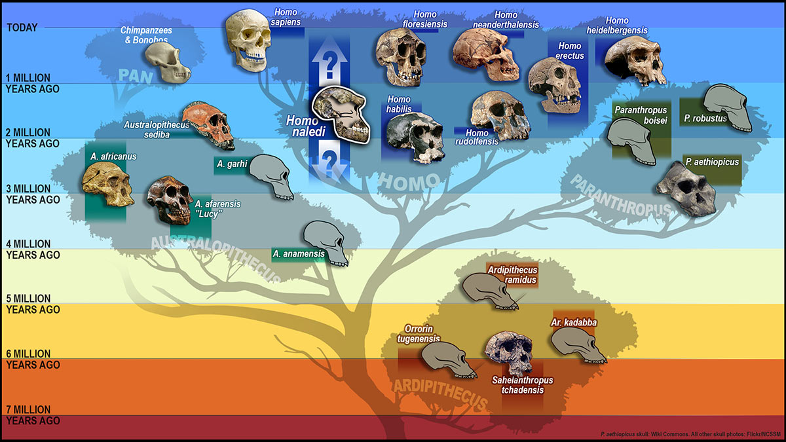

Human evolution is not a straight line, but a dynamic, branching bush where multiple species co-existed, adapted, and eventually went extinct, leaving only Homo sapiens today. This epic journey traces life from LUCA (Last Universal Common Ancestor) — the foundational cell from which all life descended an estimated 3.6 billion years ago — through the emergence of bipedal hominins and culminating in the successful global dispersal of modern humans.
Hominin (Extinct Human Species): The term used to group together all extinct human species and our immediate ancestors (which include the genera Homo, Australopithecus, Paranthropus, and Ardipithecus). All hominins are Hominids (all modern and extinct great apes), but not all hominids are hominins.

1. Pre-Homo Ancestors
Sahelanthropus tchadensis ("Chad"): The first of the hominins and the first habitually bipedal (walking consistently on two legs) great ape, appearing around 7 million years ago.
2. The Homo Lineage: Our Direct Ancestors
Homo Genus is the group of species that includes modern humans (Homo sapiens) and our closest extinct relatives, starting with Homo habilis (the first species unanimously considered Homo).
Species
Time Range (Years Ago)
Key Features & Milestones
Cultural Tools
Homo habilis ("Handy Man")
2.4 to 1.5 million
First species unanimously classified as Homo; had a growing brain case.
Oldowan Tools: Simple sharp-edged stones.
Homo erectus ("Upright Man")
1.8 million to 200,000
Longest-surviving human relative; body adapted for endurance running; first Homo species to migrate out of Africa.
Acheulean Handaxes: Sophisticated, bifacial (flaked on both sides) tools.
Homo heidelbergensis
700,000 to 200,000
Thought to be the common ancestor of Neanderthals and H. sapiens; first direct evidence of hunting large game.
Used the early prepared core technique (Levallois method).
Key adaptations seen across the Homo lineage include bipedalism, increasing brain size, and the creation of increasingly complex tools.
3. Recent Relatives and Homo sapiens
Neanderthals: Stocky, cold-adapted cousins who co-existed and interbred with H. sapiens. They showed cultural sophistication, including social care and symbolic art.
Denisovans: A related species in Asia known mainly from genetic evidence, which shows they also interbred with modern humans.
Homo floresiensis ("Hobbits"): A small species isolated on Flores Island, proving that human intelligence is not directly related to brain size.
Homo sapiens Evolution
Homo sapiens (Anatomically Modern Humans) begin showing up in the archaeological record around 300,000 years ago.
A Unique Situation: The survival of only Homo sapiens is considered an anomaly, as multiple human species co-existed for most of human history. Maybe that's why there's a loneliness
epidemic.
Origin: The oldest H. sapiens fossils were found at Jebel Irhoud in Morocco, which indicates that our evolutionary process involved the entire African continent.
Anatomy: Compared to other hominins, Homo sapiens possess:
A high cranium and rounded skull.
Reduced brow ridges (allowing for a forehead).
A chin (a highly modern and distinct feature).
A light, slender body adapted for endurance running.
Brain Size: The average size is ≈ 1,300-1,400 cubic centimeters (cm3).
The Obstetrical Dilemma
This concept is the evolutionary conflict that arises because:
Bipedalism requires a narrower pelvis for sturdy support.
Growing brain size requires a wider birth canal for the baby's head to pass through.
A baby horse can stand up and walk within hours.
A baby chimp can cling to its mom and be taken around.
A baby human useless, crying, shitting can't even lift its own head up. Can't walk for a year, sometimes more.
The Compromise: Homo sapiens evolved to give birth to babies at an earlier, more premature stage of development. The Consequence: This requires infants to be dependent for years after birth, making child-rearing a shared social project (also known as alloparenting[1]), which is believed to be the driving force behind the development of our high sociality[2], language, and complex culture.
The Last Glacial Maximum
The Last Glacial Maximum (LGM) occurred roughly 26,000 to 19,000 years ago, marking the coldest point of the last Ice Age.
The sea level dropped during the LGM because ocean water froze and was stored on land as massive glaciers, effectively removing it from the oceans.
It exposed vast continental shelves(the vast, new land that appeared), creating critical migration routes:
Bering Land Bridge (Beringia): Connected Siberia and Alaska, allowing access to the Americas.
Sunda Shelf: Connected mainland Southeast Asia to islands like Java, Sumatra, and Borneo.
Homo sapiens achieved a level of geographic(global) conquest
never reached by any other Homo species,
eventually inhabiting every continent except Antarctica.
Mastery of Earth
Homo sapiens achieved global dispersal, mastering every ecological niche not primarily through physical evolution, but through cultural adaptation: developing new ideas, clothing, shelter, cooperation, and myth.
Meanings and Notes
alloparenting - Alloparenting is when individuals other than the biological parents provide care for a child. This can include a range of activities, from simple babysitting to more involved caregiving, and is common in many animal species as well as humans. In humans, it often involves grandparents, older siblings, or other extended family and has been crucial for our evolution by providing support to parents. sociality - The tendency to associate with others and form organized groups, a concept that applies to both animals and humans. In animals, it is the degree to which individuals live in social groups and cooperate, often for survival. In humans, it refers to our complex social nature, which is tied to our success as a species and our ability to cooperate and care for one another.